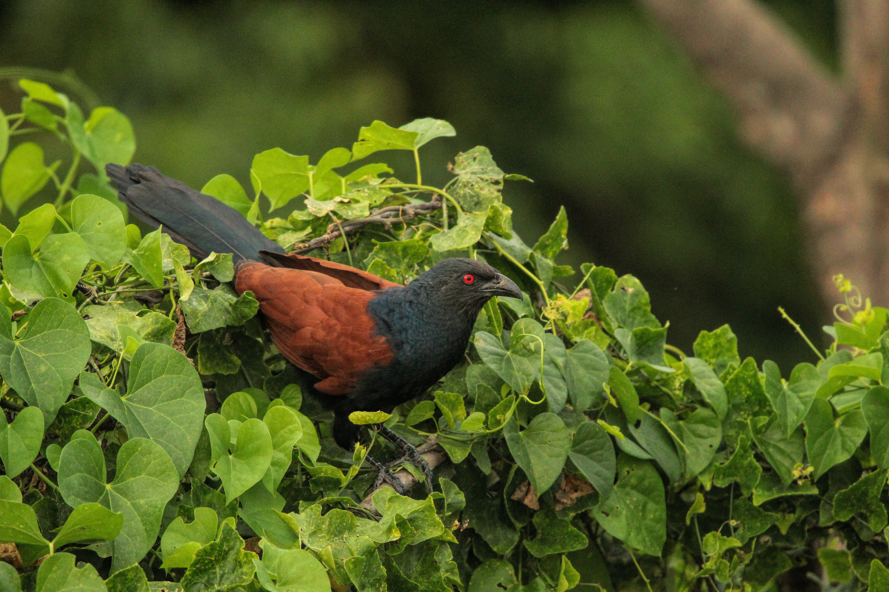

The Greater Coucal is a large, heavy cuckoo with a glossy black head and body, chestnut wings, and a long black tail. Unlike many cuckoos, it is a poor flyer and spends much of its time walking and hopping through dense vegetation. It feeds on insects, frogs, reptiles, eggs, nestlings, and various other small animals. Its deep, resonant calls are a familiar sound in scrub and gardens across India. Compared with the similar Asian Koel, it is distinguished by the combination of features described above. Its preference for scrub, grassland, gardens, plantations, wetlands, and woodland edges also helps separate it from species that use different habitats. Its characteristic behaviour, including usually walks through dense vegetation rather than flying long distances, provides another useful field clue. Taken together, these differences make it easier to distinguish from similar species when the bird is seen clearly.